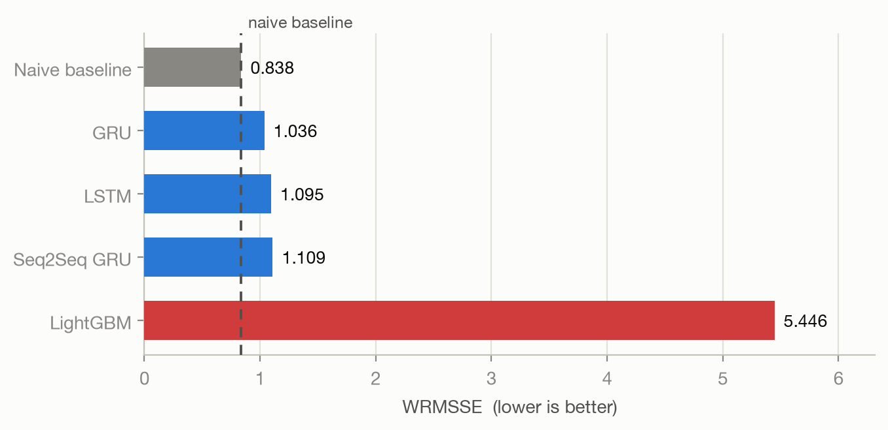
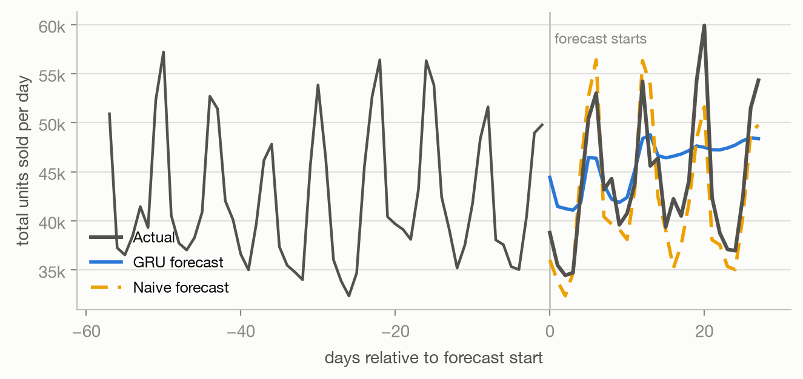
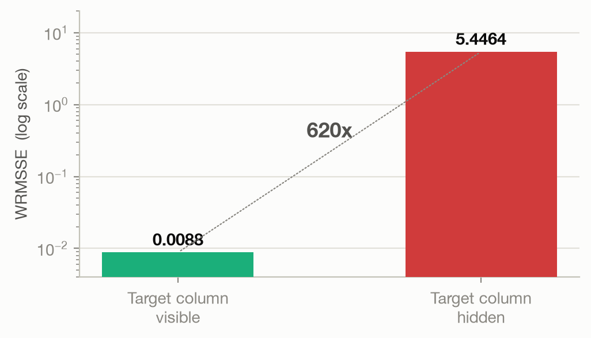

28-Day Demand Forecasting on the M5 Dataset
Ten stores. Around 3,000 products in each. Every one of them needs a stocking decision, every single day.
That is 30,490 separate forecasts to produce, and then produce again tomorrow.
3 states → 10 stores → 3 categories
→ 7 departments → 3,049 items
Forecasts are judged at every one of these levels, not just the bottom.
| Model | Idea | What happened |
|---|---|---|
| LightGBM | Boosted trees on engineered features | Broke on a data leak — see slide 8 |
| LSTM | Sequence model, predicts one day at a time | Trains slowly, no better for it |
| GRU | Lighter sequence model, same approach | Best model built — faster and more accurate than LSTM |
| Seq2Seq GRU | Encoder–decoder, all 28 days at once | Quickest to train, slightly behind GRU |
The network reads a fixed window of recent days and predicts the next one. Slide the window forward and repeat — that is the whole training set. To forecast 28 days, its own prediction is fed back in as input, 28 times.
Missing a fast seller by ten units is a real problem. Missing a slow one by ten units barely registers.
The competition metric weights each error by the dollars that product actually sells, and scores it against a naive “same as yesterday” forecast.
Below 1.0 means you beat that naive forecast.
Above 1.0 means you did not.
Before training anything, we scored the simplest possible forecast: repeat the last 28 days.


LightGBM first scored 0.0088 — near-perfect, and impossible.
The target column had ended up inside the feature set. The model was not forecasting sales, it was reading them. One missing comma in a list of columns to exclude, no error raised.
We scored the same models twice: once with that column visible, once blanked out — which is what happens when you forecast a future that has not happened yet.

A naive seasonal forecast is currently the most accurate option available, costs nothing to run, and never fails silently. It should be the default until a model genuinely beats it.
Any model that goes live is scored against the baseline on the same days. If it loses, it does not ship. This one check would have caught every problem found here.
The GRU is competitive on individual items but poor on store and category totals. Aggregate planning and shelf-level replenishment need different treatment.
Five epochs was the budget, and the loss was still falling when it stopped. This is the cheapest available gain.
The strongest pattern in the data is weekly, and the networks are never told which day it is. They are expected to infer it.
Predicting all 28 days at once avoids the feedback loop that flattens the forecast. The Seq2Seq model already does this and deserves a proper attempt.
Hold out a chronological block. The default trailing split removes the most recent data, which is the most useful data there is.